在详图中添加钉子
Add Nails to a Detail Drawing
在本示例中，详图已经绘制完成，要收尾只需显示木龙骨和箱形转角周围钉子的位置。
- 在 ARCHICAD 工具箱中双击 Detail Element（详图构件）工具。
- 打开 08 Fastenings（紧固件）文件夹。
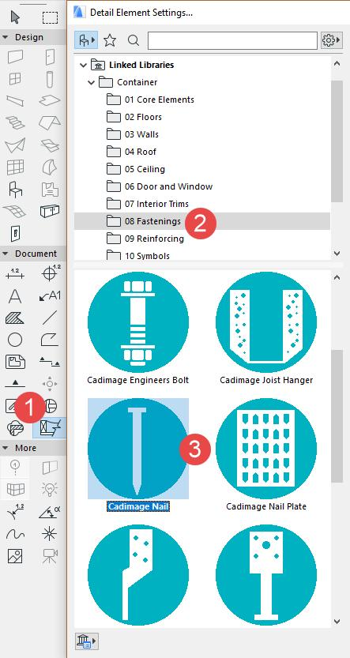
- 选择 Cadimage Nail（Cadimage 钉子）详图构件。
- 在 Configuration（配置）页面中选择 Jolt Head Nail（钉头钉）类型。
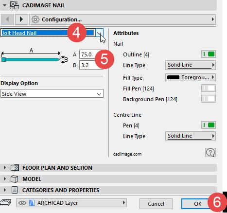
- 设置钉子的尺寸。
- 点击 OK（确定）按钮。
- 选择 Rotated（旋转）几何方式。
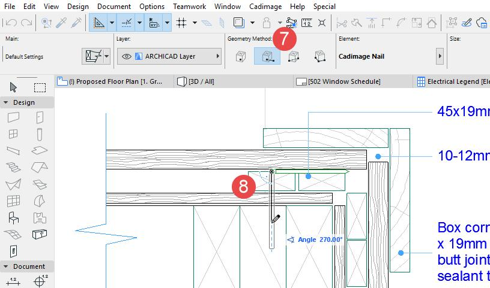
- 将钉子构件放置到图纸上，放置时旋转至正确的对齐角度。
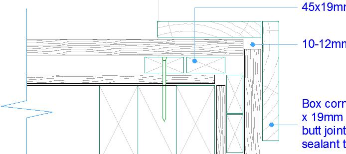
- 将其余钉子放置到图纸上。
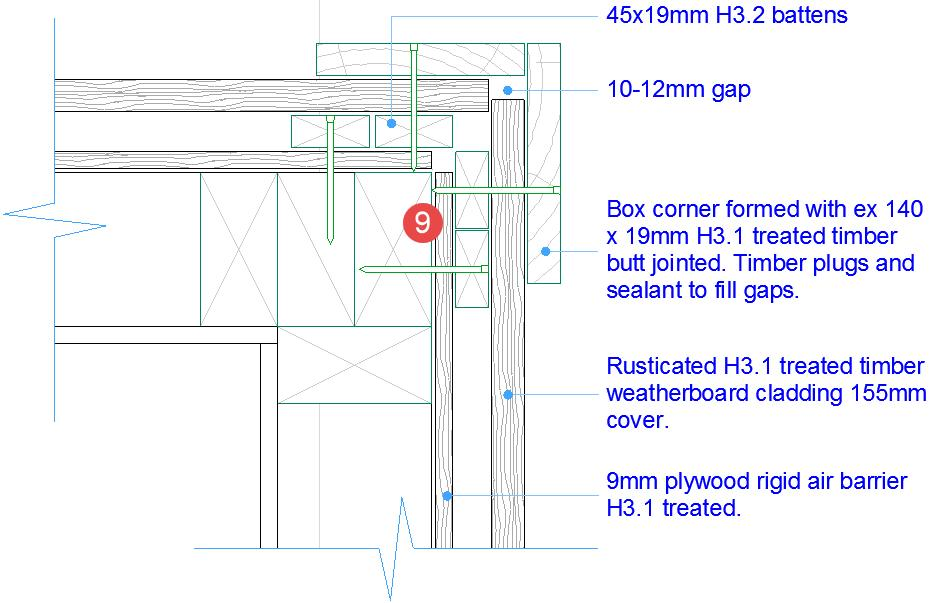
In this example, a detail has been drawn and to finish it we just need to show the location of nails around the timber battens and box corner.
- Double-click on the Detail Element tool in the ARCHICAD toolbox.
- Open the 08 Fastenings folder.
- Select the Cadimage Nail detail element.
- On the Configuration page, choose the Jolt Head Nail type.
- Set the nail dimensions.
- Click the OK button.
- Choose the Rotated Geometry Method.
- Place the nail element onto the drawing, rotating it into the correct alignment as you place it.
- Place the remaining nails onto the drawing.
英文原文对照Official English Original
In this example, a detail has been drawn and to finish it we just need to show the location of nails around the timber battens and box corner.
- Double-click on the Detail Element tool in the ARCHICAD toolbox.
- Open the 08 Fastenings folder.
- Select the Cadimage Nail detail element.
- On the Configuration page, choose the Jolt Head Nail type.
- Set the nail dimensions.
- Click the OK button.
- Choose the Rotated Geometry Method.
- Place the nail element onto the drawing, rotating it into the correct alignment as you place it.
- Place the remaining nails onto the drawing.
添加转角折断线
Add a Corner Break Line
要在详图中添加 L 形折断符号：
- 从 10 Symbols（符号）文件夹中选择 Cadimage Break Line Symbol（Cadimage 折断线符号）
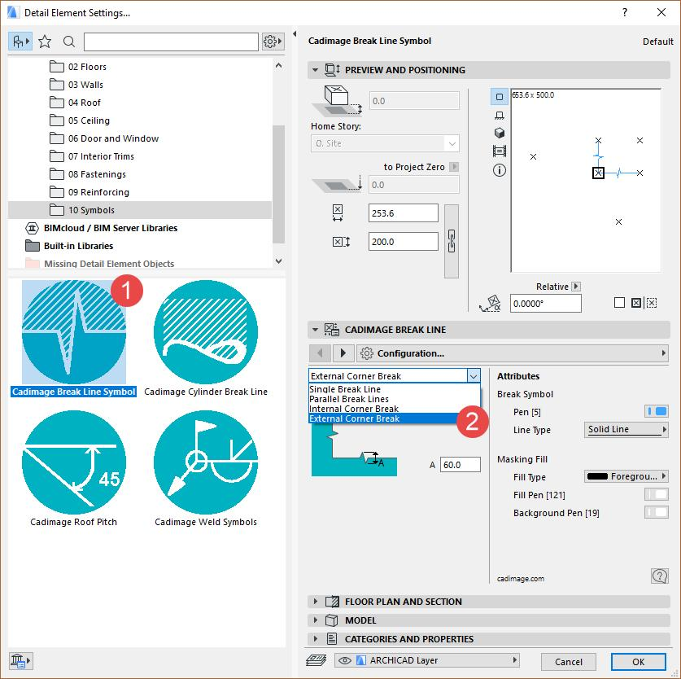
- 选择 External Corner Break（外转角折断）。
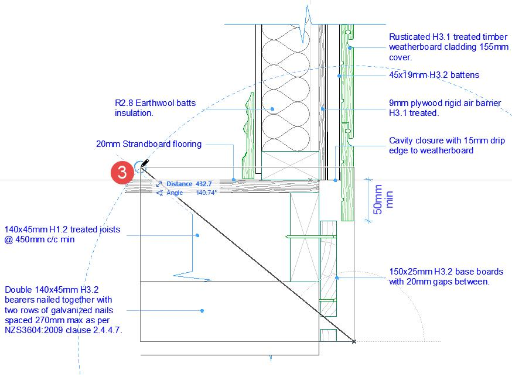
- 使用 Info Box（信息框）中的 Diagonal（对角线）几何方式，将折断符号沿图纸拉伸。
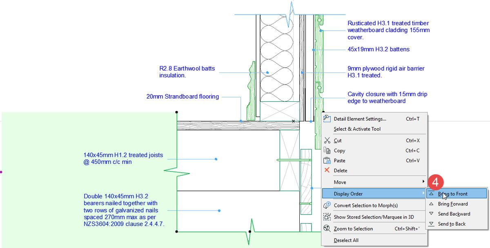
- 将折断线符号置于图纸构件之前（但位于标注构件之后）。
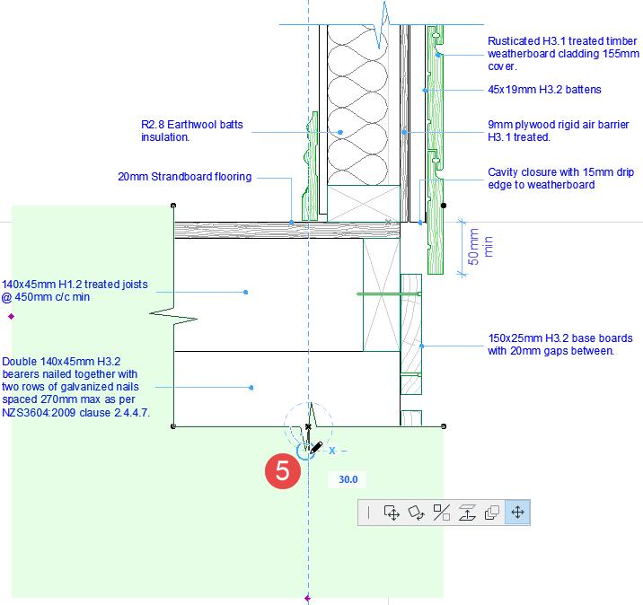
- 调整遮罩填充的范围。
To add an L-shaped break symbol to a detail drawing:
- Select Cadimage Break Line Symbol from the 10 Symbols folder
- Select an External Corner Break.
- Using the Diagonal geometry method from the Info Box, stretch the break symbol over the drawing.
- Bring the break line symbol in front of drawing elements (but behind label elements).
- Adjust the extent of the masking fill.
英文原文对照Official English Original
To add an L-shaped break symbol to a detail drawing:
- Select Cadimage Break Line Symbol from the 10 Symbols folder
- Select an External Corner Break.
- Using the Diagonal geometry method from the Info Box, stretch the break symbol over the drawing.
- Bring the break line symbol in front of drawing elements (but behind label elements).
- Adjust the extent of the masking fill.
如何手动将 Detail Element 工具添加到工具箱
How to Manually add the Detail Element tool to the Toolbox
Cadimage Detail Elements 工具是 ARCHICAD 工具箱中的一个独立工具。
如果你已正确安装该工具，但在工具箱中看不到 Detail Element（详图构件）工具，可以应用 Cadimage 工作环境（Work Environment），也可以在当前工作环境中手动将该工具添加到工具箱。
手动将 Detail Element 工具添加到工具箱：
- 在工具箱上右键单击，选择 Toolbox...（工具箱...）
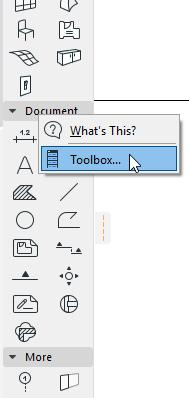
- 将 Detail Element 工具添加到工具箱。
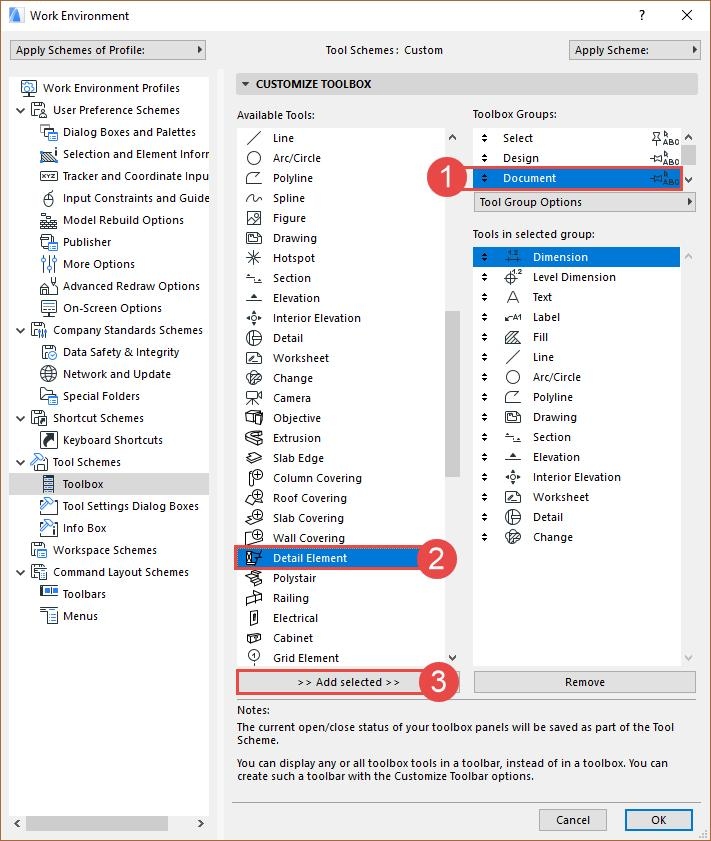
- 选择合适的工具箱分组（例如 Document（文档））。
- 在 Available Tools（可用工具）列表中选择 Detail Element 工具。
- 点击 >> Add selected >>（添加所选）按钮将该工具加入列表，然后点击 OK（确定）按钮。
The Cadimage Detail Elements tool is a separate tool in the ARCHICAD toolbox.
If you correctly installed the tool, but you don't see the Detail Element tool in the toolbox, you can either apply the Cadimage Work Environment or you can manually add the tool to the toolbox in your current work environment.
To manually add the Detail Element tool to the toolbox:
- Right-click on the toolbox, and choose Toolbox...
- Add the Detail Element tool to the toolbox.
- Select an appropriate Toolbox Group (e.g. Document ).
- Select the Detail Element tool in the Available Tools list.
- Click the >> Add selected >> button to add the tool to the list, and click the OK button.
英文原文对照Official English Original
The Cadimage Detail Elements tool is a separate tool in the ARCHICAD toolbox.
If you correctly installed the tool, but you don't see the Detail Element tool in the toolbox, you can either apply the Cadimage Work Environment or you can manually add the tool to the toolbox in your current work environment.
To manually add the Detail Element tool to the toolbox:
- Right-click on the toolbox, and choose Toolbox...
- Add the Detail Element tool to the toolbox.
- Select an appropriate Toolbox Group (e.g. Document ).
- Select the Detail Element tool in the Available Tools list.
- Click the >> Add selected >> button to add the tool to the list, and click the OK button.
ProKit Detail Elements —— 从这里开始
ProKit Detail Elements – Start here
Detail Elements 工具可快速放置 2D Detail Elements 参数化构件。该工具能加快平面图、剖面图、立面图或详图中的详图绘制流程。
它内置了一个内容丰富且功能强大的参数化 2D 构件库，用于充实详图内容。
它包含以下分类：
General Objects（通用构件）
Floor Objects（楼板构件）
Wall Objects（墙体构件）
Roof Objects（屋顶构件）
Ceiling Objects（顶棚构件）
Door and Window Objects（门窗构件）
Interior Trim Objects（室内收边构件）
Fastening Objects（紧固件构件）
Reinforcing Objects（加强构件）
2D Symbols（2D 符号）
以上内容可通过 ProKit 专用的 Detail Elements 工具访问。
Libpack 加载（自 ARCHICAD 29 起）
需要注意的是，ProKit Detail Elements 工具要求将 Detail Elements Libpack 手动加载到项目中。
与所有库一样，此操作通过库管理器（Library Manager）完成。请注意，所加载的 Libpack 必须在单个文件层级上选中，而不能像早期 ARCHICAD 版本那样在文件夹层级上选中。
库管理器（Library Manager）通过 File > Library Manager 下拉菜单打开。

进入库管理器后，我们将使用“Add”按钮添加 Detail Elements Libpack。

这可以导航到位于 ARCHICAD 安装文件夹中的 ProKit Libpack 文件夹。
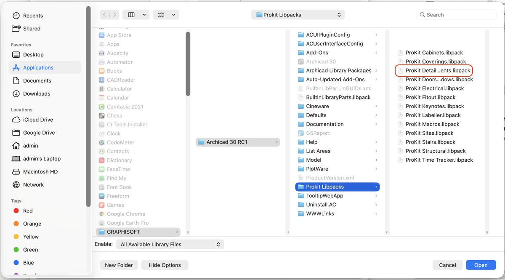
这将加载 Detail Elements Libpack 及相关的宏（Macros）。
此后 Detail Elements 构件即可在 Detail Elements 工具中使用。
重要：
如果 Detail Elements 工具未显示在默认 ARCHICAD 工作环境左侧的工具箱中，可以通过在工具箱上右键单击将其添加。工具箱会弹出一个对话框，用于添加 Coverings Tools。

这样即可将 Detail Elements 工具添加到工具箱中。
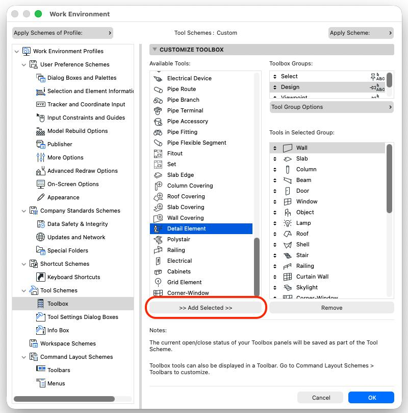
Detail Elements 工具现在就会显示出来，建议保存工作环境（Work Environment）以免每次都要重新添加，不过 ARCHICAD 通常会保留这些设置。
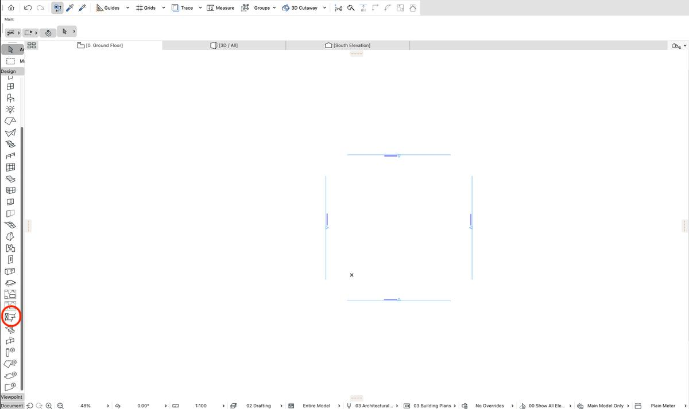
放置 Detail Elements 构件
在 ARCHICAD 中，Detail Elements 库构件通过 ProKit Detail Elements 工具放置。
如果 ProKit Detail Elements 工具未显示在工具箱中，可以通过加载 ProKit 工作环境（Work Environment）来添加，或在工具箱设置（Toolbox Settings）中手动添加。
在工具箱上右键单击，然后导航到 Detail Elements 工具将其添加。
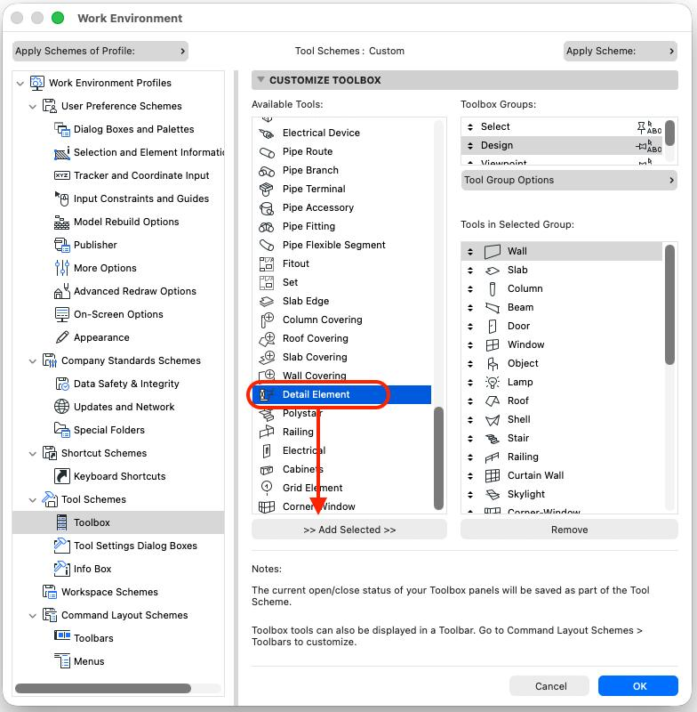
选中该工具后，即可打开设置面板并放置任意 Detail Elements 构件。
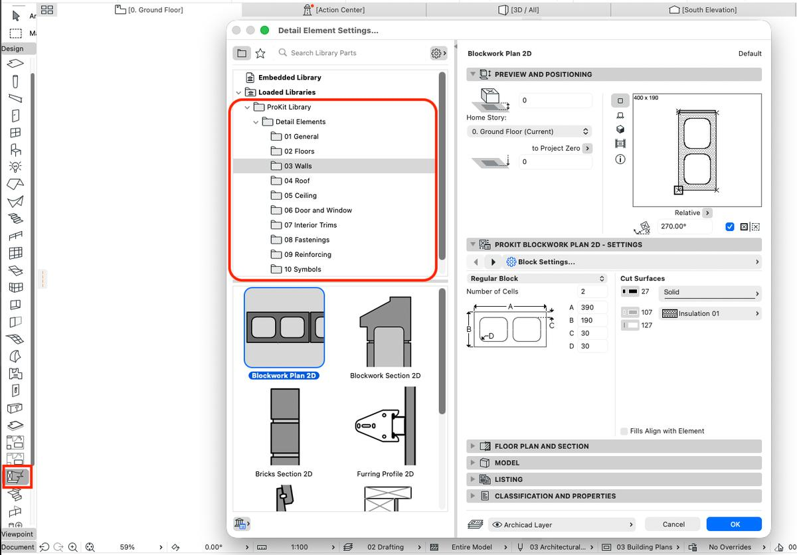
关于 Detail Elements 工具各项功能的更多信息，请参阅知识库文章。
The Detail Elements Tool allows for very quick placement 2D Detail Elements parametric components. This Tool is speeds up the detailing process in Plan Section Elevation or Detail Views.
It contains an extensive sophisticated library of parametric 2D Objects used to flesh out the Detail drawings.
It contains the following Categories:
General Objects
Floor Objects
Wall Objects
Roof Objects
Ceiling Objects
Door and Window Objects
Interior Trim Objects
Fastening Objects
Reinforcing Objects
2D Symbols
These are accessible through the ProKit Specific Detail Elements Tool.
Libpack loading (since ARCHICAD 29)
It is important to note that the ProKit Detail Elements Tool requires the Detail Elements Libpack to be manually loaded into the project.
As with all Libraries this is done through the Library Manager. Please note that the Libpacks that are loaded need to be selected at an individual file and not at a folder level as was the case in earlier ARCHICAD versions.
The Library Manager is accessed through the File>Library Manager dropdown.
Once in the Library Manager we will use the “Add” button to add the Detail Elements Libpack.
This allows navigation to the ProKit Libpack folder located in the ARCHICAD installation folder.
This will load the Detail Elements Libpack and associated Macros.
The Detail Elements Objects will now be available in the Detail Elements Tool.
IMPORTANT:
If the Detail Elements Tool not showing in the toolbox on the left in the default ARCHICAD work environment, they can be added by right clicking on in the Toolbox. The Toolbox will bring up a dialog to add the Coverings Tools.
This will allow adding the Detail Elements Tool to the Toolbox.
The Detail Elements Tool will now show up, it is recommended to save the Work Environment to avoid having to add this, although ARCHICAD should retain them.
Placing a Detail Elements Object
The Detail Elements library objects are placed with the Prokit Detail Elements Tool in ARCHCAD.
If the ProKit Detail Elements tool is not showing in the Toolbox, It can be added through loading the ProKit Work Environment, or adding it manually from the Toolbox Settings.
Right Click on the Toolbox and Navigate to the Detail Elements tool to add it.
Once the tool is selected, the settings can be opened and any Detail Elements Object placed.
For more detailed information on the different Detail Elements Tool features please see the Knowledge-base articles.
英文原文对照Official English Original
The Detail Elements Tool allows for very quick placement 2D Detail Elements parametric components. This Tool is speeds up the detailing process in Plan Section Elevation or Detail Views.
It contains an extensive sophisticated library of parametric 2D Objects used to flesh out the Detail drawings.
It contains the following Categories:
General Objects
Floor Objects
Wall Objects
Roof Objects
Ceiling Objects
Door and Window Objects
Interior Trim Objects
Fastening Objects
Reinforcing Objects
2D Symbols
These are accessible through the ProKit Specific Detail Elements Tool.
Libpack loading (since ARCHICAD 29)
It is important to note that the ProKit Detail Elements Tool requires the Detail Elements Libpack to be manually loaded into the project.
As with all Libraries this is done through the Library Manager. Please note that the Libpacks that are loaded need to be selected at an individual file and not at a folder level as was the case in earlier ARCHICAD versions.
The Library Manager is accessed through the File>Library Manager dropdown.
Once in the Library Manager we will use the “Add” button to add the Detail Elements Libpack.
This allows navigation to the ProKit Libpack folder located in the ARCHICAD installation folder.
This will load the Detail Elements Libpack and associated Macros.
The Detail Elements Objects will now be available in the Detail Elements Tool.
IMPORTANT:
If the Detail Elements Tool not showing in the toolbox on the left in the default ARCHICAD work environment, they can be added by right clicking on in the Toolbox. The Toolbox will bring up a dialog to add the Coverings Tools.
This will allow adding the Detail Elements Tool to the Toolbox.
The Detail Elements Tool will now show up, it is recommended to save the Work Environment to avoid having to add this, although ARCHICAD should retain them.
Placing a Detail Elements Object
The Detail Elements library objects are placed with the Prokit Detail Elements Tool in ARCHCAD.
If the ProKit Detail Elements tool is not showing in the Toolbox, It can be added through loading the ProKit Work Environment, or adding it manually from the Toolbox Settings.
Right Click on the Toolbox and Navigate to the Detail Elements tool to add it.
Once the tool is selected, the settings can be opened and any Detail Elements Object placed.
For more detailed information on the different Detail Elements Tool features please see the Knowledge-base articles.
更新日志 —— Detail Elements
Release Notes - Detail Elements
更新日志 —— Detail Elements —— 8.14
缺陷
DET-165 封檐板图形不匹配
DET-170 Furring Sections 构件中的 48mm Rondo 竖龙骨尺寸有误
改进
DET-141 封檐板 —— 允许省略企口
DET-146 CI Tools 桁架椽需要小于 5 度
DET-151 需求 —— Jack Truss，屋檐宽度可分别调整两侧
DET-153 恢复 Jack Truss 在 AC25 中与 AC24 相同的能力
新功能
DET-169 允许将密封胶条显示为压缩状态
DET-171 墙板剖面 —— 增加粗面（Rusticated）设置
任务
DET-168 Detail Elements 需要针对 macos ARM 进行构建
Release notes - Detail Elements - 8.14
Bug
DET-165 Fascia Board diagram mismatch
DET-170 48mm Rondo Furring Channel in the Furring Sections object is the wrong size
Improvement
DET-141 Fascia Board - allow to omit rebates
DET-146 Ci Tools Truss Rafter needs less then 5 degrees
DET-151 WISH - Jack Truss, alter Eaves width separately on each side
DET-153 Give back the ability for the jack Truss in AC25 what it was in AC24
New Feature
DET-169 Allow the Sealant Bead to be shown as Compressed
DET-171 Wall Board Sections - extra setting for Rusticated
Task
DET-168 Detail Elements needs to be built for macos ARM
英文原文对照Official English Original
Release notes - Detail Elements - 8.14
Bug
DET-165 Fascia Board diagram mismatch
DET-170 48mm Rondo Furring Channel in the Furring Sections object is the wrong size
Improvement
DET-141 Fascia Board - allow to omit rebates
DET-146 Ci Tools Truss Rafter needs less then 5 degrees
DET-151 WISH - Jack Truss, alter Eaves width separately on each side
DET-153 Give back the ability for the jack Truss in AC25 what it was in AC24
New Feature
DET-169 Allow the Sealant Bead to be shown as Compressed
DET-171 Wall Board Sections - extra setting for Rusticated
Task
DET-168 Detail Elements needs to be built for macos ARM